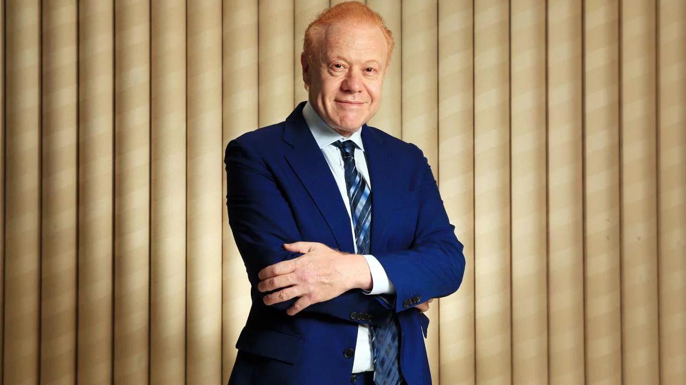
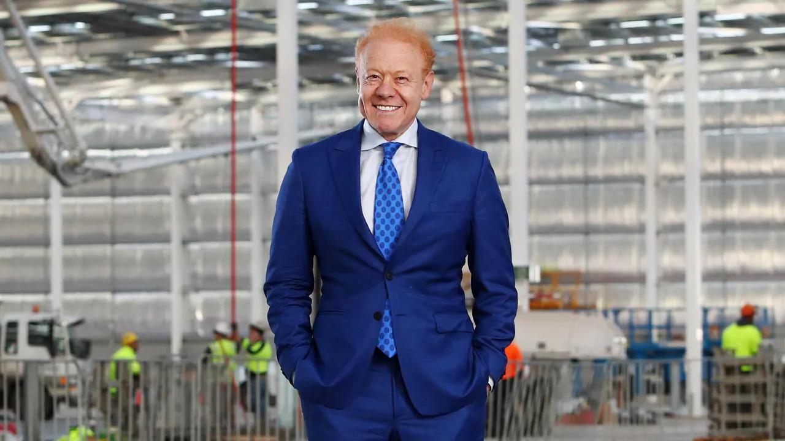
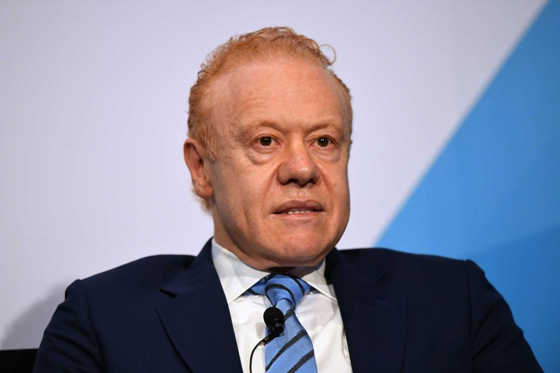
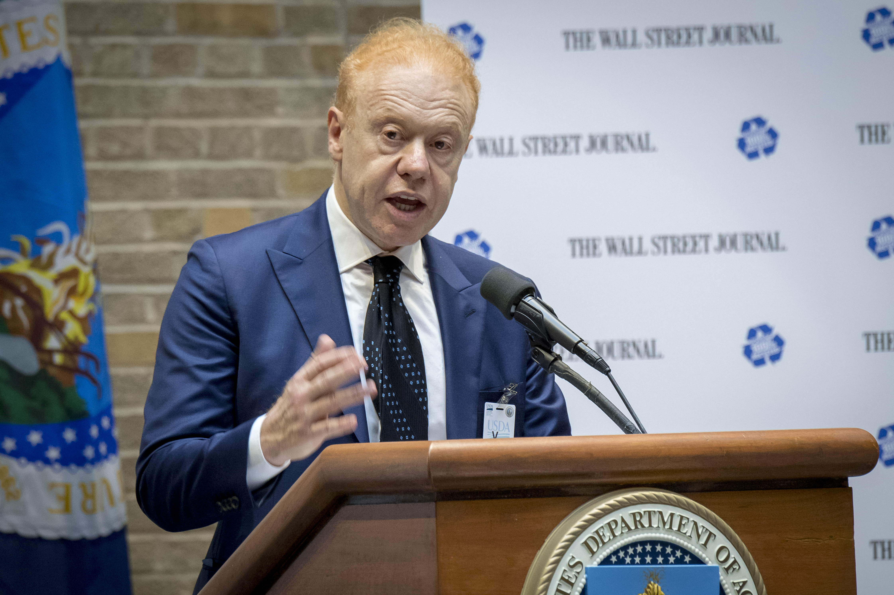

Anthony Joseph Pratt (born April 11, 1960), an Australian businessman and billionaire, is the Executive Chairman of Visy Industries and Pratt Industries United States, the world’s largest privately owned packaging and paper company. According to the 2016 BRW Rich 200, Pratt and his family have a net worth of A$10.35 billion; the second richest in Australia. Forbes assessed Pratt's net worth in 2016 at US$4.2 billion; listing his sisters' wealth independently.Pratt is the son of former manufacturing magnate and President of the Carlton Football Club Richard Pratt and his wife philanthropist Jeanne Pratt AC.

Biography
Anthony Joseph Pratt

Early life and education
Pratt was born in Melbourne, Victoria to Richard Pratt (né Przecicki) and Jeanne Pratt AC, Polish-Jewish immigrants. He graduated from Monash University, Melbourne, with a Bachelor of Economics (Hons) in 1982.

Career
Pratt joined the management consulting firm of McKinsey & Co in 1982, before joining Visy as joint General Manager of its board. In 1988, he became Deputy Chairman of Visy Industries. Three years later, he moved to the United States to lead the company's expansion there. Over the next 15 years, Pratt Industries grew 15-fold in sales and earnings, through greenfield initiatives and the acquisition of several corrugated manufacturing companies that now form the heart of Pratt Industries. Company revenues grew from US$100 million in 1991; and by 2016 revenue was US$3 billion. During that same period, Pratt Industries grew from the 46th largest corrugated box producer in the U.S. to the 5th largest. It is the only major paper container board company that is 100 percent recycled. Pratt Industries employs more than 5,800 staff at its mills and box plants throughout the USA – more US citizens than any other Australian company. In 2016, Pratt was awarded the RISI North American Packaging CEO of the Year Award. That same year, Pratt opened a 100% recycled paper mill near Chicago, adding about US$1 billion to Pratt’s wealth. Also in 2016, Forbes ranked Pratt Industries #181 on its list of "America's Largest Private Companies." In addition, Pratt's Visy, which employs 5,500 people in Australia, was named Australia's largest private company by revenue.

Philanthropy
Pratt is a family trustee of the Pratt Foundation, which was established in 1978 by the late Richard Pratt and Jeanne Pratt AC, donating US$15 million - US$17 million per year. Pratt also serves on the board of trustees of the Appeal of Conscience Foundation, is a patron of the British Asian Trust, is a founding patron of the Australia India Leadership Dialogue, Australian patron of the Trilateral Track II Food and Water Security Dialogue which he launched with former Israeli Prime Minister Shimon Peres between India, Israel and Australia, Australian patron of the Australia India Leadership Dialogue, founding patron of The Prince's Charities Australia, and patron of the Indian Film Festival of Melbourne. He also supports the Forbes Under 30 Summits.